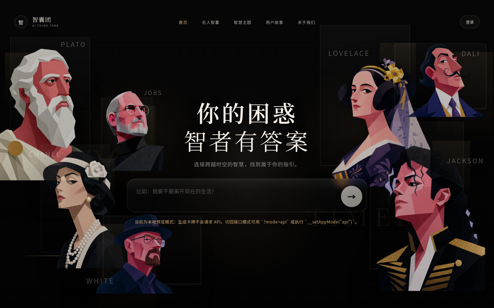
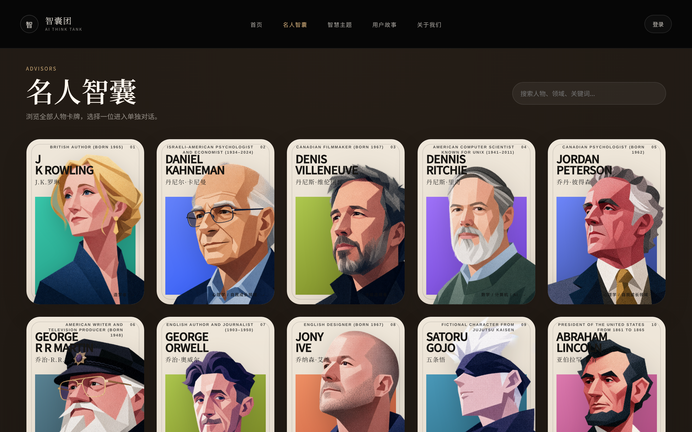
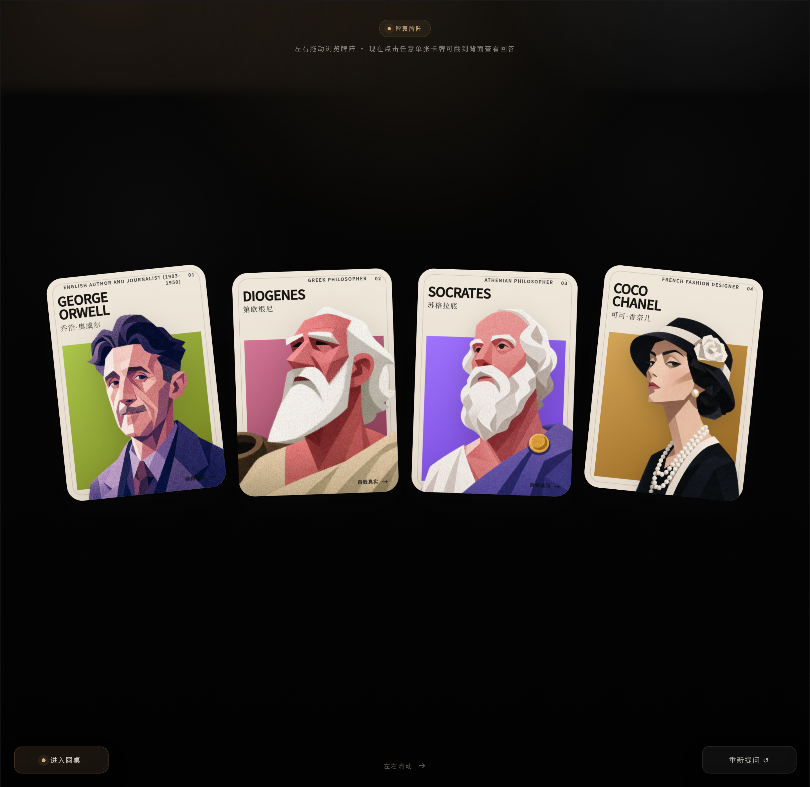
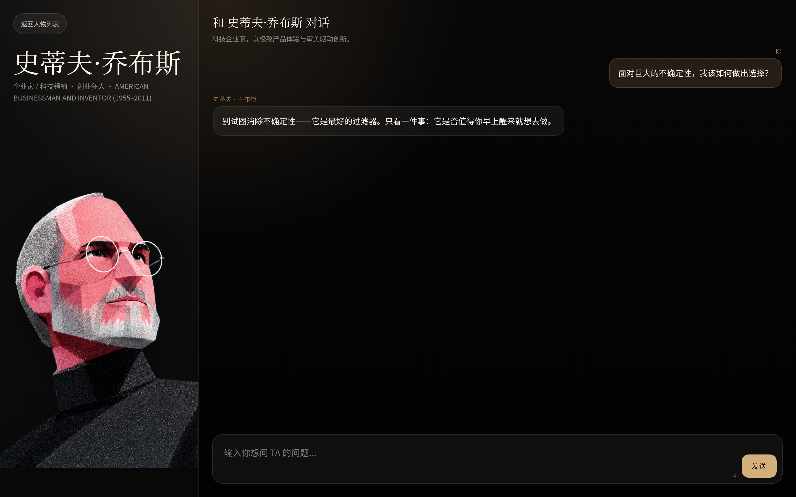
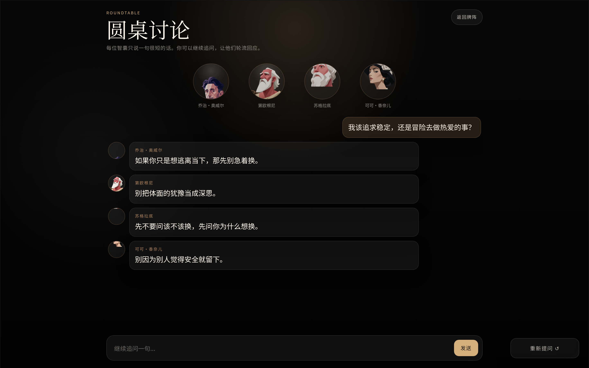

飞书文档已完整论述了市场背景、竞品分析、四维能力框架与 RQ1–4 研究设计。本补充材料只补文档尚未展开的一层——产品是如何被真正实现的。以下五个界面均为本地前后端连通后驱动真实 AI 生成的实拍，而非效果图。
调研期人物库为 144 位，上线原型已扩展至 255 位（约 18 个思想领域），是一次从研究到工程的迭代收敛。
首页 · 名人智囊库 · 智能荐师 · 单人对话 · 群贤论道。





一条从用户提问到人格化回答的清晰链路，每一层职责单一、可独立验证。
/api/recommend 荐师、/api/chat/respond 单人对话、/api/chat/group 群贤论道将用户提问归入 career / relationship / growth / creative / study 五类意图（默认 growth），再把意图映射到对应思想领域并加权，让「问什么」精准匹配「谁能答」。
召回语料的排序融合三个信号：
重要性 × 0.5 + 词面相关 × 0.35 + 来源权威 × 0.15
既保证答得像本人，又保证每句话有据可循。
同一问题并行驱动多位智者独立发言，各持立场、互不复读，并由主持人视角做阶段性收束——把「一对一咨询」升级为「思想的碰撞现场」。
代笔真实人物最大的伦理与体验风险是「编造」。系统在每一次生成前都注入一组全局约束，直接对应 RQ3 关于「AI 代笔边界」的研究命题。
忠于人物设定，同时保持有用、清晰、脚踏实地。
不虚构历史事实、引语、作品或生平事件。
当召回语料不足时，谨慎作答并主动声明哪些内容不确定。
不宣称对用户拥有私人的、未经告知的了解。
回答始终贴合用户的具体问题，保持实用与相关。
在调研原型之上，进一步补齐了「从听见到共创」的能力。
用户可创建属于自己的思想人物，把私人语料变成可对话的智者。
上传 TED 等演讲视频，系统提炼其观点、论证方式与语言风格，蒸馏为可对话的人格。
从「听智者说」进阶到「和智者辩」，在交锋中内化思想、检验自己的立场。
四条研究主线各自映射到已落地的产品能力，唯一待开发的是最后的「表达」层。
| 研究主线 | 对应命题 | 产品实现 | 状态 |
|---|---|---|---|
| 听见思想 | RQ1 | 智能荐师 · 单人对话 · 群贤论道 | 已实现 |
| 人格共创 | RQ3 | 多模态视频蒸馏人格 · 用户自建角色 | 已实现 |
| 内化思想 | RQ2 | 与角色辩论 | 已实现 |
| 表达思想 | RQ4 | My Talk 发布层（讲稿教练 / 开口陪练 / 发布） | 🚧 待开发 |